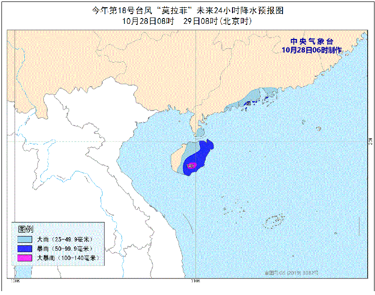

中国天气网讯 预计今天（28日），受台风“莫拉菲”影响，我国海南一带的降雨增强，海南岛中东部等地将有大到暴雨，局地大暴雨。此外，冷空气继续东移，未来几天华北南部、黄淮以及东北等地的部分地区气温将震荡起伏，公众需注意添衣保暖。
今晨，中央气象台继续发布台风蓝色预警。预计，“莫拉菲”将以每小时25公里左右的速度向西偏北方向移动，将于今天上午在越南广南省到平定省一带沿海登陆（台风级或强台风级，12-14级，35-42米/秒），登陆后强度迅速减弱。
受此影响，今日海南岛的风雨将会有所加强。尤其是降水方面，中央气象预计，今天，广东南部沿海、雷州半岛南部、海南岛中东部将有大到暴雨，局地大暴雨。

除了降水以外，“莫拉菲”还带来了大风天气。受“莫拉菲”和冷空气的共同影响，今天，台湾海峡、巴士海峡、南海西部和东北部、北部湾、琼州海峡、中沙群岛西部、西沙群岛及海南岛沿海将有7-8级大风，其中南海中西部和西南部的偏北海域风力可达 9-10级。
今年10月以来，西北太平洋和南海已经生成了5个台风。就目前的预报形势来看，预计10月底南海上或将再生成一个新的台风，时效较远，需密切关注。
此外，今天除了海南一带的降水，预计新疆北疆北部和伊犁河谷、黑龙江西北部、川西高原北部等地部分地区还将有小雪或雨夹雪，局地有中到大雪。西北地区东部、华北西部、黄淮西部、江汉、江淮、西南地区大部、华南大部等地部分地区有小到中雨。
眼下，此轮冷空气正在继续向东移动。受冷空气影响，昨天，青海东部、甘肃中东部、宁夏南部等地降雪（雨）或雨夹雪2～9毫米，宁夏固原10～13毫米。今日5时较昨日5时，华北东部和南部、东北地区中南部及陕西中部等地降温4～8℃，局地降温超过10℃。
预计今天，冷空气已经“过境”的地方将率先开启“回暖”模式。像是兰州，今天最高气温将回升到14℃左右。而降温的区域将主要集中在华北南部、黄淮以及东北等地的部分地区，像是山西太原，今天最高气温将降至13℃上下。
总的来说，今后几天，北方多地的气温将呈现出震荡起伏的状态，但整体上仍将在常年同时期正常水平线上下波动，不会出现连续长时间的偏暖或偏冷。之后，10月29日又会有一股冷空气率先影响我国新疆地区，中央气象台预计，10月29日至30日，受中等强度冷空气影响，新疆、西北地区东部、内蒙古西部将出现大风降温天气，气温普遍下降4～6℃，局地降温8℃以上。上述地区将出现4～6级风，新疆山口地区、内蒙古西部风力可达7级。新疆东部和南疆盆地、内蒙古西部局地有沙尘天气。新疆北部局地将有中到大雪。
气象专家提醒，每年秋冬交替的时节，气温起伏波动明显，容易引发感冒等疾病，公众需做好防寒保暖措施。
查天气 关注 “中国天气网” 微信公众号、“天气管家”APP安卓版